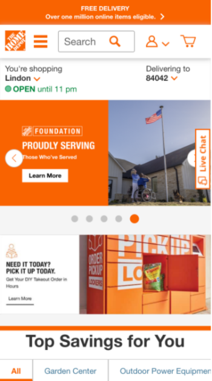

Whitespace
Apple
apple.comI love apple's web site because it's always very simplistic and does whitespace very well. Because of the whitespace around the edges and that they always have white backgrounds of the pictures, it never feels crowded.
Alignment
Church of Jesus Christ
ChurchofJesusChrist.orgThe Church does a really good job with alignment on their website. All the links and images are perfectly aligned. I like how no matter the size all the edges corners, and pictures line up. It makes it look neat and tidy.
Contrast
Home Depot
HomeDepot.com
I've always admired Home Depot's choice of colors. I think the orange and white contrast very nicely Thier website takes advantage of this. It makes it feel modern, but also no other company uses the colors orange and white, so whenever you see it, you automatically think of home depot.